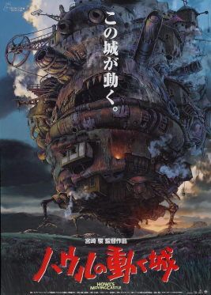
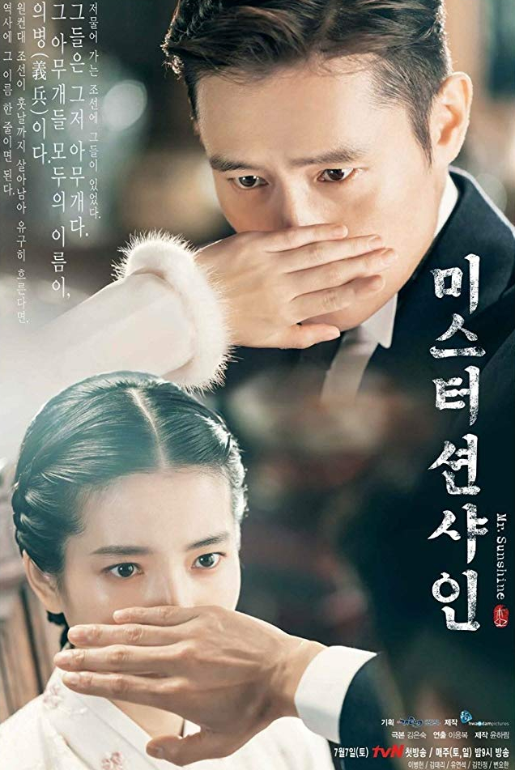

Howl's Moving Castle ditampilkan perdana di Festival Film Venesia pada 5 September 2004, dan dirilis di bioskop-bioskop Jepang pada 20 November 2004. Howl's Moving Castle menerima omzet 190 juta Dolar AS di Jepang dan 235 juta Dolar AS di seluruh dunia,[1] menjadikannya sebagai salah satu film terlaris dalam sejarah perfilman Jepang. Film ini lalu disulihsuarakan ke bahasa Inggris oleh Pete Docter dari Pixar dan didistribusi di Amerika Utara oleh Walt Disney Pictures. Howl's Moving Castle dirilis secara terbatas di Amerika Serikat dan Kanada pada 10 Juni 2005 dan dirilis di Australia pada 22 September 2005 dan di Britania Raya juga di bulan September. Howl's Moving Castle masuk ke dalam nominasi Academy Award for Best Animated Feature pada Academy Awards ke-78 tahun 2006.

Kisah seorang anak muda yang melakukan perjalanan ke Amerika Serikat selama tahun 1871 Shinmiyangyo (ekspedisi A.S. ke Korea), dan kembali ke tanah airnya kemudian sebagai tentara Amerika. Dia bertemu dan jatuh cinta pada anak perempuan aristokrat.

Kapten Yoo Si-jin (Song Joong-ki) adalah tentara pasukan khusus Tentara Angkatan Darat Korea Selatan yang memimpin kelompok khusus bernama Tim Alpha yang terdiri dari lima tentara, termasuk dirinya sendiri. Pada awal cerita, Si-jin dan Sersan Mayor Seo Dae-young (Jin Goo) menangkap pencuri sepeda motor Kim Gi-beom. Gi-beom yang terluka akibat jatuh dari motor dikirim ke Rumah Sakit Haesung, tempat di mana Dokter Kang Mo-yeon (Song Hye-kyo) bekerja. Terpesona akan kecantikan Mo-yeon, Si-jin berusaha mencari perhatian Mo-yeon. Akan tetapi, Mo-yeon tidak percaya Si-jin dan Dae-young benar-benar tentara, terlebih lagi karena nama samaran Si-jin adalah "Big Boss" (bos besar), sehingga Mo-yeon mencurigai mereka berdua adalah gangster yang memukuli Gi-beom. Untuk memverifikasi identitas mereka, Si-jin meminta bantuan dokter tentara Yoon Myeong-ju (Kim Ji-won) yang pernah magang di Rumah Sakit Haesung. Meski punya masa lalu kurang menyenangkan dengan Myeong-ju, Mo-yeon percaya dengan verifikasi Myeong-ju.